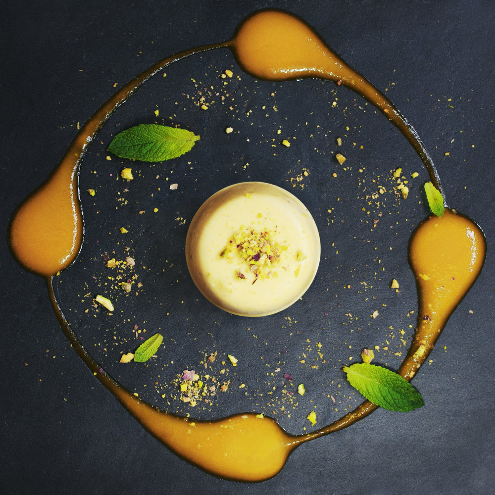

<html>
  <head>
    <title>Passport to India</title>
    <link rel="stylesheet" href="navbar.css">
  </html>
  <body>
    <ul id="topNav">
      <li><a href="contactpage.html">CONTACT</a></li>
      <li><a href="aboutpage.html">ABOUT</a></li>
      <li><a href="index.html">HOME</a></li>
    </ul>

    <ul id="menuNav">
      <li><a href="chickenpakora.html">Chicken Pakora</a></li>
      <li><a href="gobimanchurian.html">Gobi Manchurian</a></li>
      <li><a href="chickentikka.html">Chicken Tikka Masala</a></li>
      <li><a href="mangokulfi.html">Mango Kulfi</a></li>
      <li><a href="gulabjamun.html">Gulab Jamun</a></li>
    </ul>

<!--Restaurant Contents, Changes for the various pages-->

    <div id=para>
        <center>
            <h1 id="Mango Kulfi">Mango Kulfi</h1>
            
            <p>Mango Kulfi is a very creamy dessert that is often reffered to as the Indian version of mango ice cream.</p>
            <p>This popular dessert is enriched with many magnificent flavors such as mangoes and nuts.</p>
            <p>This dessert is the ultimate summer dessert for mango lovers.</p>
            <p>$4.99</p>
            <br>
            <br>
            <br>
            <br>
            <br>
            <br>
            <br>
            <p>Created By: Navya Khandavalli Updated: Oct 2020</p>
        </center>
